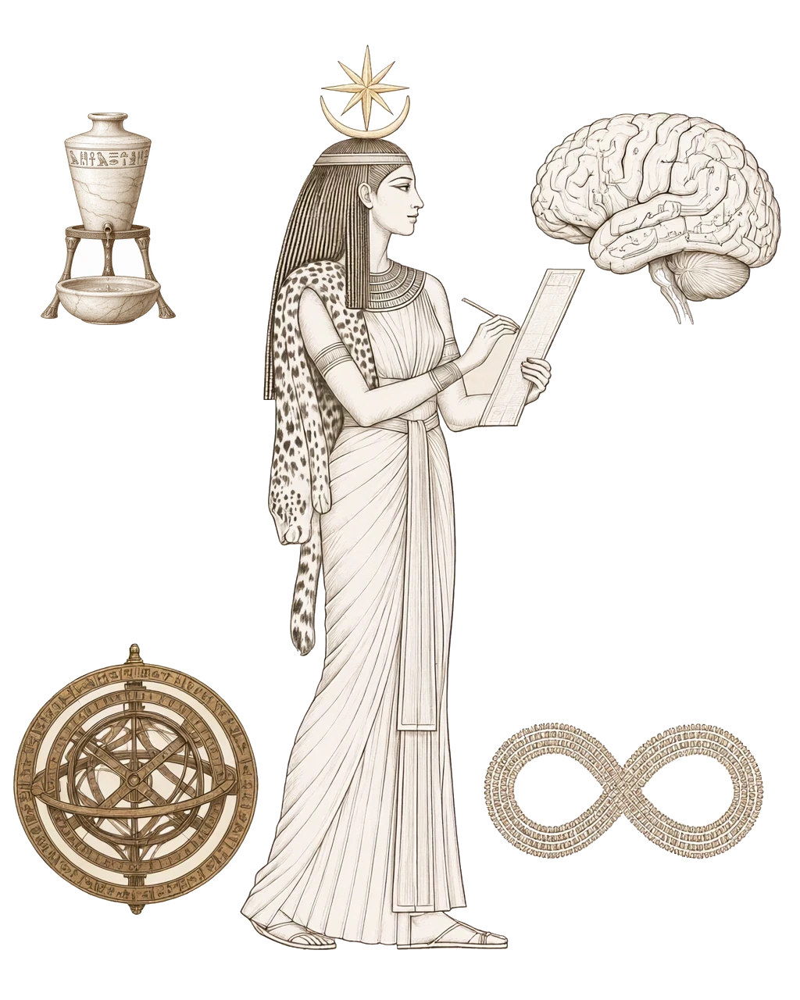

塞莎特
——题谱
RESEARCH QUESTION ATLAS
OFFLINE ATLAS
ATLAS / 2026.11.18
RESEARCH QUESTION ATLAS
00
知识是人类缔造
巴别塔
的阶梯，
思想是构建未来的桥梁
塞莎特——题谱是一个选题助手：输入研究方向，得到可验证的问题、公开数据集、导师与投稿去处。
进入系统
ENTER
无需登录 · 本地离线运行
轻触屏幕任意位置也可进入
536
研究方向
552
公开数据集
18,296
可浏览学者
701
期刊会议

塞莎特——题谱 / 选题工坊
--:--
本地时间
正在读取本地索引…
工坊
素材
导师
论文
期刊
计划